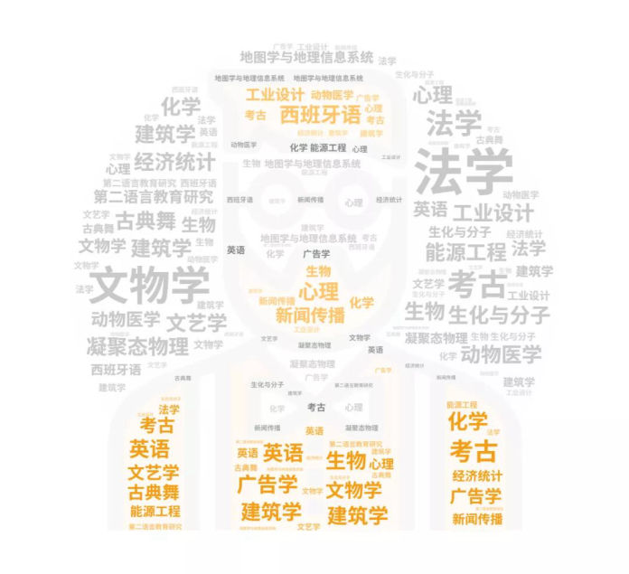

部分个人作品
这里是我的部分文字作品的展示，如果想了解更多内容，可以进入公众号

南得叨叨 | 戏剧突围：从阳春白雪到大众文化
《声入人心》第二季似乎没有延续上一季的辉煌，高雅艺术的大火是历史的必然还是只是“惊鸿一瞥”，我们无从知晓。

跨界大佬在雷火的一千种可能
他们是怎么转型成功，成为跨界大佬，和雷火碰撞出了无限可能？
快来看小师妹的独家揭秘~
“四”面楚“歌”，郭敬明跌倒
两人“相爱相杀”的亲密关系大概也与多年前这次合作有关，有人剪辑了两人的互动视频，甚至给他们取了一个cp名——“四”面楚“歌”。
这个名字似乎一语成谶。